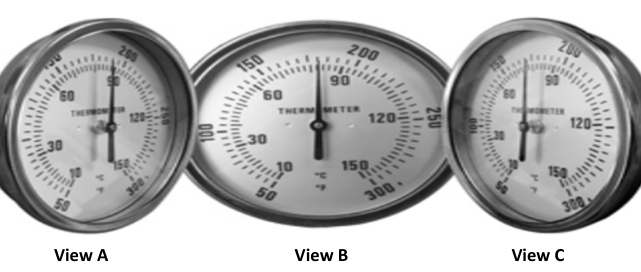
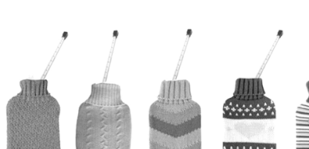
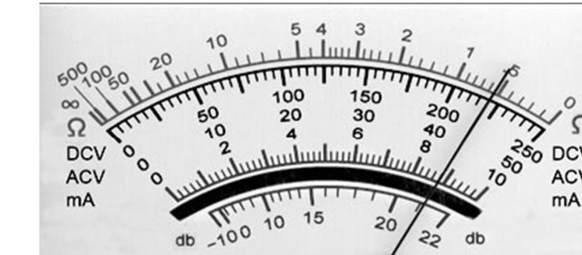
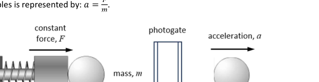
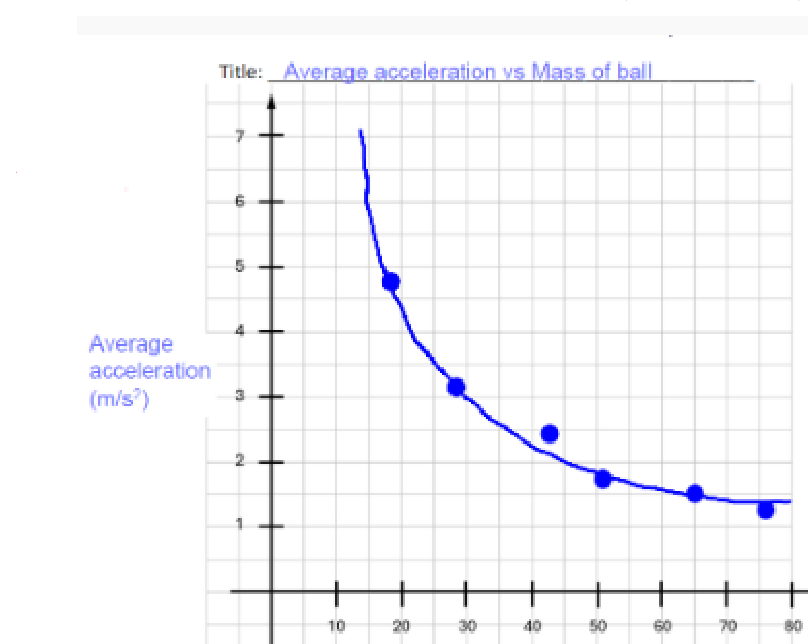

Part A: Multiple choice (9 marks)
The scientific method includes all of the following features except:
Hypotheses are supported or not supported by evidence; they are never "proven".
Use this information for Questions 2 and 3. Alexis, Becker, Curtis and Diogo are teammates who share an apartment. They planted some seeds in a pot, and some plants started to grow. One day, after training, they came home and saw the pot of plants.
A. Alexis shouted, "The plants need water."
B. Becker exclaimed, "The leaves have changed from green to yellow."
C. Curtis said, "The plants must be dead because they are yellow."
D. Diogo suggested, "If I water the plants daily for a week, they will live."
Whose statement is best described as an observation?
Whose statement is closest to a hypothesis?
The "questioning and predicting" stage of an investigation includes all of these except:
The risk assessment belongs to the planning stage.
Use this information for Questions 5 and 6. Ruben and Conall are fitness coaches at a soccer club. They want to find out whether the genre of music played during gym sessions affects the players' exercise intensity.
The genres of music they chose are indie, K-pop, classical, electronic dance music and nature sounds. Which type of data best describes the genre of music?
Exercise intensity could be shown by a significant increase in all of the following except:
Use this information for Questions 7 and 8. The picture shows three views of the same meter from different positions: View A from the left, View B directly in front, and View C from the right. The needle is in the same position in each view.

Meters should be read with the needle and scale directly in front of your eye, as in View B. Reading from an angle, as in View A or C, causes an error called:
Which combination of errors is likely in View A and View C?
The needle sits slightly in front of the scale, so looking from the left makes it appear further right (a higher reading), and looking from the right makes it appear further left (a lower reading).
"Communication" in a scientific report includes all of the following except:
Section B: Short answer (27 marks)
Question 1 (11 marks)
Diaz and Nunez are planning an experiment for their school's Big Science Competition, testing how well natural fibres retain heat. Their five fibres are cotton, hemp, linen, wool and silk. According to some references, wool retains heat best because it traps the most air, followed by hemp, silk, linen and cotton. One reference noted that thicker material also retains heat better.
Based on this information, write one research question about the ability of natural fibres to retain heat. (This is not a hypothesis.)
For example: "What is the effect of the thickness of the material on its ability to retain heat?" OR "Which type of natural fibre is best at retaining heat?" (or similar).
Diaz and Nunez decide to compare how well the different fibres retain heat. They fill five containers with hot water at the same starting temperature, and wrap each in cloth made from one of the five fibres. They use a thermometer and stopwatch to measure the time for the water temperature to drop by a fixed amount.

Write a hypothesis relating how well a natural fibre retains heat to the time it takes the water temperature to drop by a fixed amount.
For example: "If a material is better at retaining heat, the time for the water temperature to drop will be longer." OR "If a material is thicker, the time for the water temperature to drop will be longer."
Identify the variables and their data types.
Independent variable: ; data type:
Dependent variable: ; data type:
List three controlled variables in this experiment.
Any three: the size of the container; the starting temperature; the final temperature (the size of the temperature drop); if the type of material is the IV, its thickness is controlled; if thickness is the IV, all the cloths must be the same material.
What type of graph would you use to plot the results of this experiment?
If the type of material is the IV: a column (bar) graph. If thickness is the IV: a scatter graph (line graph).
Question 2 (3 marks)
The diagram shows the needle of an electric meter measuring a quantity such as voltage or current. It has three scales, for which full deflection is 250, 50 and 10 units.

Give the reading of the meter when it is connected to the:
- 250-unit scale:
- 50-unit scale:
- 10-unit scale:
Question 3 (13 marks)
Virgil and Ibou are experimenting with a ball launcher: a plunger and spring that exerts a constant force F on a ball. The ball is launched along a horizontal surface through a photogate, which measures its acceleration a. Background research suggests that a = F / m.

They want to investigate the relationship between the mass of the ball, m, and its acceleration after a constant force. They change the mass by using 5 balls made of 5 different metals.
What characteristic of the metal balls must be controlled?
All the balls must be the same size and shape (round).
Their results:
| Mass of ball m (g) | Trial 1 a (m/s2) | Trial 2 a (m/s2) | Trial 3 a (m/s2) | Average a (m/s2) |
|---|---|---|---|---|
| 19 | 4.81 | 4.89 | 4.78 | 4.83 |
| 28 | 3.21 | 3.18 | 3.07 | 3.15 |
| 43 | 2.45 | 2.40 | 2.37 | 2.41 |
| 51 | 1.79 | 1.83 | 1.91 | 1.84 |
| 65 | 1.55 | 1.48 | 1.57 | 1.53 |
| 77 | (blank) | 1.20 | 1.25 | 1.25 |
Virgil and Ibou accidentally left a blank in the table (trial 1 for the 77 g ball). Fill in the blank.
Average = (x + 1.20 + 1.25) ÷ 3 = 1.25, so x + 1.20 + 1.25 = 3.75 and x = 3.75 − 1.20 − 1.25 = 1.30.
On graph paper: plot the data; include a suitable title; include a suitable title and units on each axis; and draw a smooth curve of best fit through the data. Describe your graph, then compare.
- Points plotted correctly (3 marks).
- Title, e.g. "Average acceleration vs mass of ball" (1 mark).
- Axes: mass of ball (g) on the horizontal axis and average acceleration (m/s2) on the vertical axis (1 mark).
- A smooth curve that decreases steeply at first, then levels off (1 mark).

Using your line of best fit, estimate the acceleration of a ball with a mass of 15 g.
Values from 5 to 7 m/s2 are accepted.
Discuss the results, covering: the relationship between the IV and the DV; how closely the line of best fit follows the data, and what this tells us about the strength of the correlation; and a well-reasoned explanation for the observed relationship.
- Relationship: there is an inverse relationship: as the mass of the ball increases, its acceleration decreases (1 mark).
- Correlation: the line of best fit follows the data closely, showing a strong correlation between the mass of the ball and its acceleration (1 mark).
- Explanation: as background theory (a = F / m) suggests, with the same force, a greater mass resists changes in motion more, so it accelerates less. Heavier balls also experience more friction (1 mark).